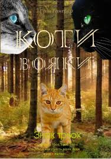
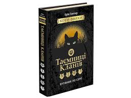
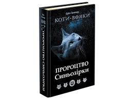

Сюжет 3 циклу "Знак трьох"
Троє нащадків легендарного провідника Громового Клану народилися в нелегкі часи. Лісові коти, що після Великої Мандрівки оселилися біля озера, гинуть від голоду і хвороб. Невже Зореклан помилився, коли привів їх сюди? Нащадки Вогнезора отримали надзвичайну силу від зоряних предків. Та поки що вони не усвідомлюють, який дар тримають у своїх лапах. Їм доводиться самостійно обирати життєвий шлях, помилятися, шукати себе знову і сподіватися, що в темному і непевному майбутньому Кланів з’явиться хоча б найменший прозір... Аж поки один з них не зрозуміє, що його сила прихована в слабкості, що темрява навколо нього — це насправді дар провидіння.
Сюжет книги "Шлях Вогнезора" (події відбуваються після книги "Темні Часи" 1 циклу)
Після жорстокої битви із Кривавим Кланом минула вже не одна повня, і в лісі нарешті запанували мир та спокій. Вогнезір із головою поринає у провідництво і робить усе можливе, щоб зміцнити Громовий Клан. Але несподівано в його життя вриваються тіні минулого. Загадкові примарні коти не дають йому спокою ні вдень, ні вночі. Про що вони благають? Куди кличуть? Аби дізнатися правду, Вогнезір має вирушити в небезпечну подорож, яка переверне з лап на голову не тільки його власне життя, але й життя усіх лісових Кланів.

Сюжет книги-путівника "Таємниці Кланів"
З чого почалася історія лісових Кланів? Звідки прийшли їхні предки, як і чим живуть вони зараз? Подарункове кольорове видання - путівник проведе вас найпотаємнішими стежками світу котів-вояків, познайомить із найвидатнішими провідниками та медикішками, навчить вояцьких правил та бойових прийомів і розкриє вражаючі секрети. Нашороште вуха і приготуйте лапи для захоплюючої подорожі. Такого ви не почуєте і не побачите в жодній книзі серії!
Сюжет книги "Пророцтво Синьозірки" (події відбуваються задовго до книги "На волю!")
Напруга між Кланами лісових котів зростає. Громові вояки мусять довести свою силу, щоб зберегти територію і здобич від зазіхань зголоднілих сусідів. У ці непрості часи у Клані народжується кішечка Синютка. Зореклан пророчить їй велике майбутнє: вона стане сильною, як вогонь, і проведе Громових котів крізь найтемніші часи. Та перш ніж сповниться пророцтво, Синютка має пройти власний шлях випробувань, сповнений болісних втрат, сумнівів і складних рішень. І навіть коли зрештою засяє велич могутньої провідниці Синьозірки, темні таємниці минулого не залишать її у спокої до останнього дня.
